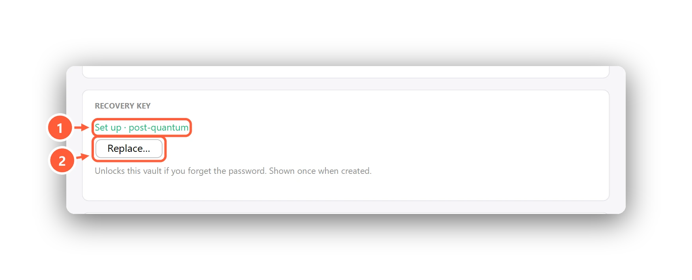

Your recovery key: save it, use it, replace it
Right after you set your password, Clavis shows your vault's recovery key. If you ever forget the password, this key unlocks the vault instead. It is shown once and never stored on your PC.

- Your one-time recovery key — write it down or save it
- Copy it to a password manager
- …or save it to a USB stick
- Confirm you've stored it somewhere safe
- Finish
Forgot your password?
On the unlock screen, choose Forgot password? Use recovery key and type the key (dashes, spaces and letter case don't matter). Clavis unlocks the vault and shows you your password so you can note it down — or set a new one with Change Password. The recovery key keeps working afterwards.

- Your vault's password
- Forgot it? Unlock with your recovery key
- Unlock
Lost the key, or worried someone saw it?
Open Settings → Recovery key and press Replace…. You get a new key; the old one stops working at once.

- Recovery key status (post-quantum)
- Make a new recovery key (the old one stops working)
What "post-quantum" means here
The recovery key is sealed with a hybrid of X25519 and ML-KEM-768 (the NIST post-quantum standard). An attacker would have to break both, so data protected today stays protected even against a future quantum computer. The Security page has the details.
Can't find what you need? All help articles · Email us